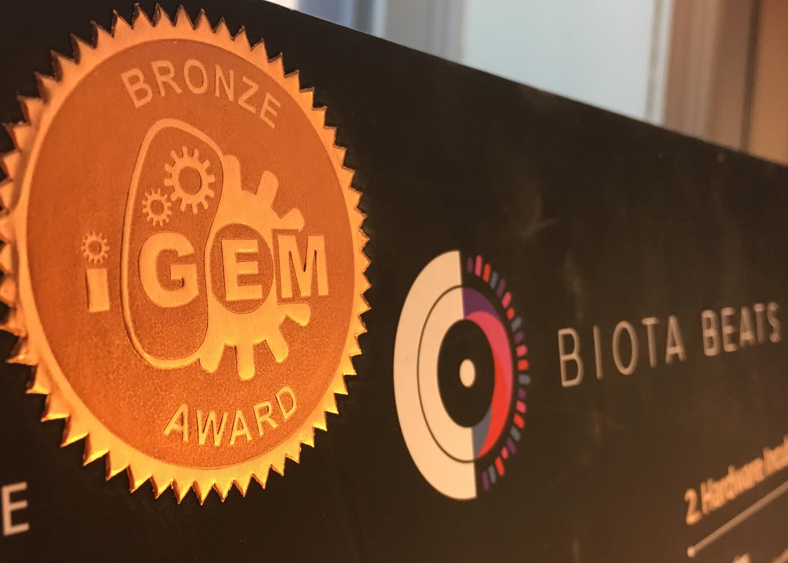
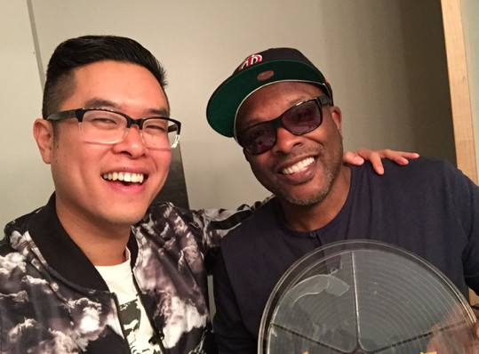

Below you find stories of the various ways in which Biota Beats has connected people, inspired them to learn and teach, to swab there bacteria, to make music, and to create! Are you interested in being involved (as part of our team), or in a Biota Beats workshop? Please contact us!
-
Biota Beats - created for iGEM competition
Back in 2016, our community biology lab at EMW Bookstore, Street Bio, started a project for The International Genetically Engineered Machine (iGEM) Competition, which was named Biota Beats. Click here for more info.
-
Biota Beats and the Street Bio Youth Science Initiative

In order to bring Biota Beats to local youth, we pioneered the EMW Bookstore Street Bio Youth Science Initiative with the goal of immersing local, underrepresented youth at the forefront of science. Click here for more info.
-
DJ Jazzy Jeff creating music with Biota Beats
One of our long term dreams was to use our system to make beats from the bacteria of some DJ legends. Magic happened and dreams came true: we got to build with the legendary DJ Jazzy Jeff and culture his bacteria on our biota records! Click here for more info.
-
DJ Coco Robert and bacterial music with Biota Beats
Rising star DJ Coco Robert was amazing and down to share her bacteria to the cause as well! Click here for more info.